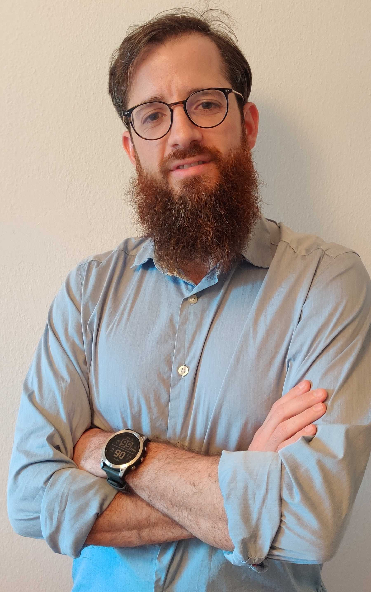

About me

I'm a Postdoctoral researcher at the PATCH lab working with Johannes Kinder. I work in the intersection of programming languages, security and formal methods. I'm particularly interested in building tools for automatic software verification.
In November 2014 I received my PhD from ENS Cachan, where I was a doctoral candidate at LSV under supervision of Stefan Haar and Delphine Longuet. From 2014 to 2016 I was a Postdoctoral researcher at Aalto University working with Keijo Heljanko. Between 2017 and 2019 I worked at fortiss GmbH.
If you want to get in contact, please send me an email
I am / have been serving on the program committees of the following conferences and workshops:
- PLDI 2022: Artifact Evaluation Committee
- SVCOMP 2022: Program Committee / Jury
- USENIX Security 2022: Artifact Evaluation Committee
- POPL 2022: Artifact Evaluation Committee
- PLAS 2021: Program Committee
- S&P 2021: Shadow Program Committee
- PLDI 2021: Artifact Evaluation Committee
- SVCOMP 2021: Program Committee / Jury
- OOPSLA 2020: Artifact Evaluation Committee
- PLDI 2020: Artifact Evaluation Committee
- SVCOMP 2020: Program Committee / Jury
- POPL 2020: Artifact Evaluation Committee